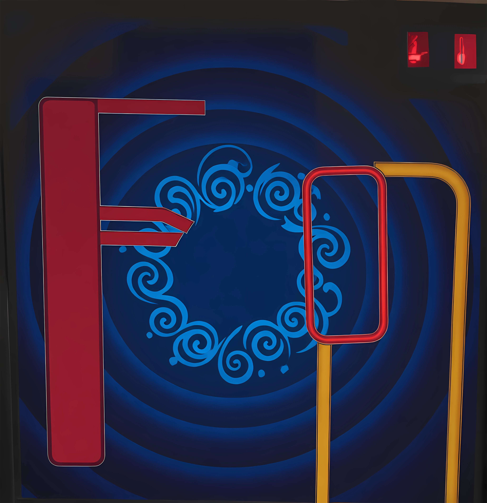
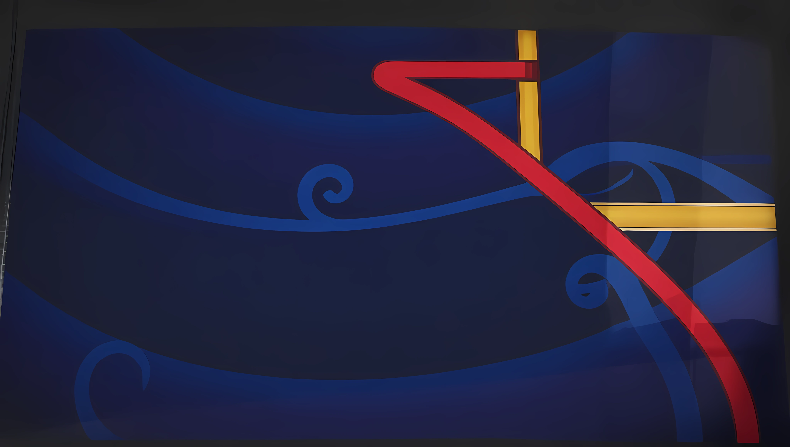
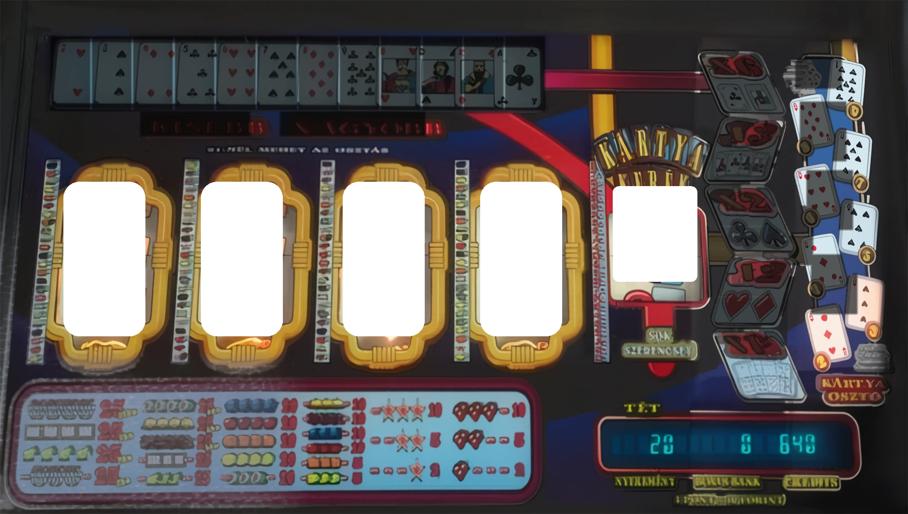

Telefonon: koppints a gépen lévő gombokra (TART, TÉT, START, háromszögek). A ☰ MENÜ-ben válthatsz 2D és 3D között.
Gombok: TART 1–4 = 1–4, TÉT = T, START = Szóköz. A felső üveg alján lévő 4 háromszög gomb = Q W E R (vagy kattintás).
Automatikus tartás: nem nyerő pörgetés után a gép magától megtartja az elkezdett sort (2–3 egyforma szimbólum balról vagy jobbról) — a TART gombokkal átállíthatod. Tartott pörgetés után nincs újabb tartás.
Minden választás a START-tal megy: amikor két vagy több lehetőség felváltva villog (szorzó, KISEBB/NAGYOBB, V-s létraszint, Match Play kerék, PLUS/STOP), a START azt választja, amelyik épp ég.
Minden nyerés után: a szorzók (×6 K/A, ×3, ×2 fekete, ×2 piros, ×1) felváltva villognak. Találat után a menü újra jön a megszorzott összeggel — addig kockáztatsz, amíg akarsz. A TÉT gomb egyben ELVISZ: ezzel veszed fel a nyereményt. Az ×1½ másfélszerezi a nyereményt, ha 2–9 lap jön.
Kisebb/Nagyobb: a 0. szintről indul, már a 4-esért is tippelni kell. TÉT (ELVISZ) = megállsz és elviszed. Háromszögek: (bal szélső) · Extra lépés · Másik kártya · Kifizetés. A 20-asnál a TÉT-tel megállva a Classic és a Super Classic Black Jack felváltva villog, START elkapja; utána a sora (Super Classic BJ / Match Play, ill. Classic BJ / Super lépések) villog, START választ. Másik kártya: új kártyát pörget, arról tippelsz.
Kerek lámpák (2. szint): a 4-es villog; ha a START-ot akkor nyomod, amikor ég, elkapod a következő kört. Minden égő lámpa 4-et ér (3 lámpa = 12). TART = elviszed, mellényomás = elbukod. Mind az 5 = 20.
Super lépések: előbb a jobb oldali pályán végigfutó fényből a START-tal elkapod a lépésszámot. Utána TART 1–4 kiválasztja a tárcsát, a LÉPÉS FEL / LE felváltva villog, és a START dönti el az irányt. Minden lépés egyet levon. TÉT = kész.
Match Play: START → a kerék lámpái a zenére villognak és megállnak egy szimbólumon. Utána a LÉPÉS FEL / LE villog: a START-tal irányt választasz, és a tárcsák maguktól lépkednek, amíg ki nem jön a nyerő sor. Match Play +: utána a PLUS / STOP vibrál — PLUS = újabb kör.
Black Jack: START (vagy a „Másik kártya” háromszög) = lap, TÉT vagy TART = megállás. 17–21 fizet, 21 fölött bukás.
A nyereménytábla, a tárcsaszalagok, a „kerek lámpák” szint és a Super lépések még tervezet
(game/config.js).